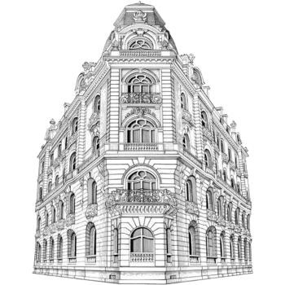
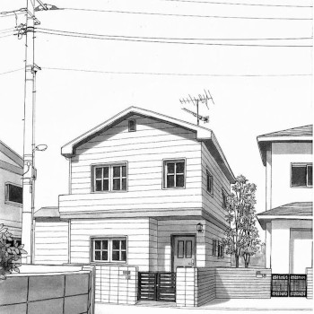

Nossos projetos são um convite ao aconchego! Confira algumas das casas que ajudamos a transformar em verdadeiros lares.

Inspire-se com nosso portfólio e veja como é possível unir o charme do passado com a praticidade dos dias de hoje. Transformamos espaços em refúgios de acolhimento e bem-estar. Explore nossas obras e descubra como podemos criar o seu projeto dos sonhos!

Cada projeto reflete o cuidado, a atenção aos detalhes e a paixão por criar espaços cheios de história e identidade.

Clássico, rústico ou romântico: exploramos diferentes estilos dentro da proposta de "casa de vó", respeitando o gosto de cada cliente.